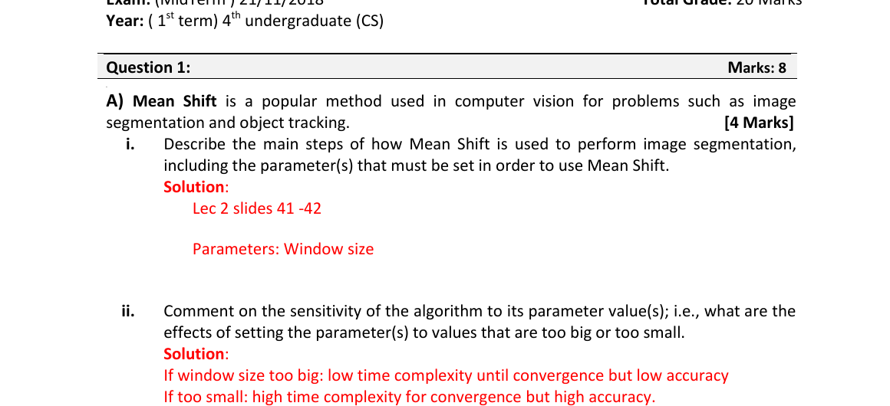

Question 1 · Part A — Mean Shift for image segmentation
Question (as printed)

i. Main steps of Mean Shift segmentation
Mean Shift treats every pixel as a point in feature space (e.g. (x, y, R, G, B)), drops a window on each point, and keeps sliding that window uphill toward the densest region. Points that climb to the same peak get the same label. The one knob you set is the window (bandwidth) size.
Step 1. Put every pixel into a feature vector — usually 5-D: (x, y, R, G, B). This is the "feature space" the algorithm searches in.
Step 2. Around each point, place a window of the chosen bandwidth. Compute the mean of all points inside that window.
Step 3. Move the window so its centre lands on that mean. This is the "mean shift" step — it nudges the window toward the locally densest area.
Step 4. Repeat Step 2/3 until the window stops moving (a mode of the density). Tag the starting pixel with the mode it landed on.
Step 5. Pixels that converge to the same mode form one segment. That's the segmentation.
Parameter to set: the window (kernel) size / bandwidth — this is the single most important knob.
ii. Sensitivity to the window size
Big window = looks at a lot of pixels at once → fewer steps to converge, but the mode it lands on is fuzzy (over-smooths, merges segments). Small window = sees fine detail and stays accurate, but each pixel walks slowly and the algorithm takes much longer.
| Window size | Convergence time | Accuracy / detail |
|---|---|---|
| Too big | Fast (low complexity) | Low — over-smooths, merges segments |
| Too small | Slow (high complexity) | High — preserves detail, but may over-segment |
Sweet spot: just big enough to span one homogeneous region, but no bigger.
📚 Closest in this pack: L01 — Spatial / pixel-space operations. (Mean Shift itself isn't in the new L01–L12; this is classical-CV material.)